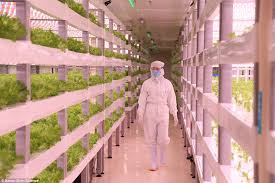
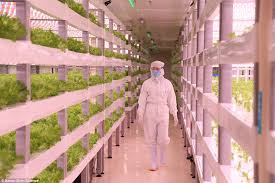
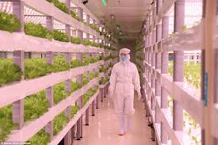
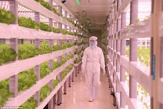

Vertical farming is the practice of producing food and medicine in vertically stacked layers, vertically inclined surfaces and/or integrated in other structures (such as in a skyscraper, used warehouse, or shipping container). The modern ideas of vertical farming use indoor farming techniques and controlled-environment agriculture (CEA) technology, where all environmental factors can be controlled. These facilities utilize artificial control of light, environmental control (humidity, temperature, gases...) and fertigation. Some vertical farms use techniques similar to greenhouses, where natural sunlight can be augmented with artificial lighting and metal reflectors. Hydroponic systems can be lit by LEDs that mimic sunlight. Software can ensure that all the plants get the same amount of light, water and nutrients. Proper managements means that no herbicides or pesticides are required.